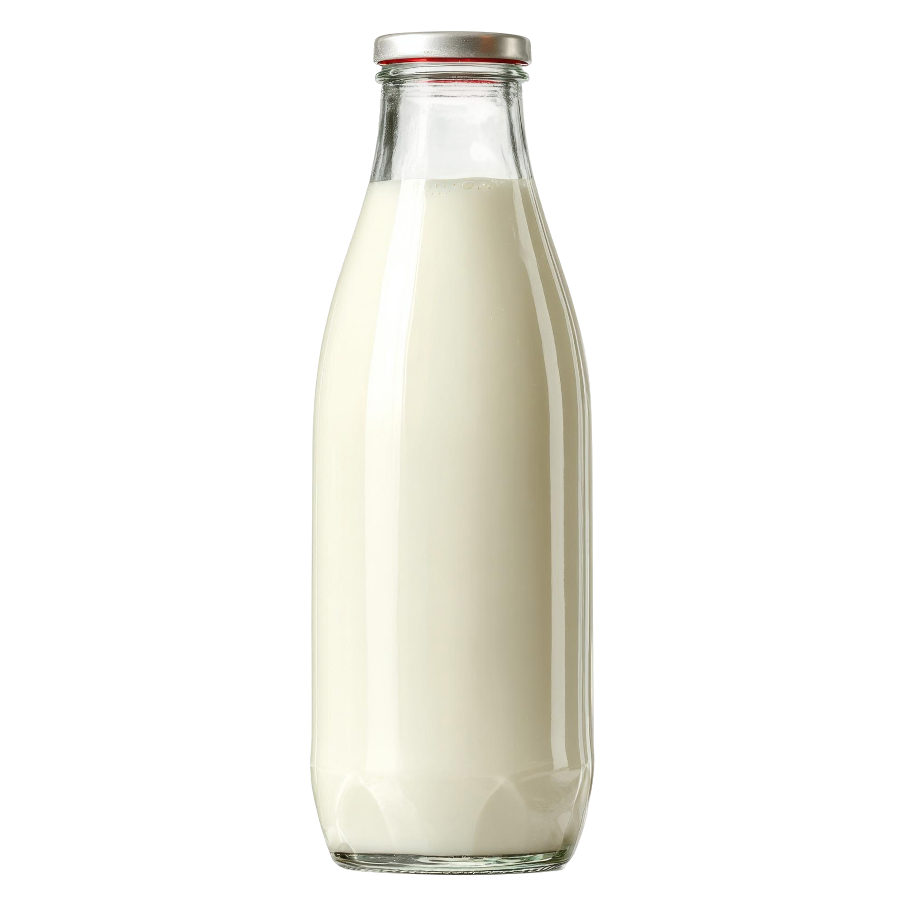

Melk

Over melk
Melk is een zuivelproduct dat snel kan bederven wanneer het niet koel bewaard wordt. De houdbaarheid wordt beïnvloed door temperatuur, verpakking en de aanwezigheid van micro-organismen.
Meer informatie
Dit product wordt verder onderzocht door een ander team op de beurs. Wil je meer weten over het verval van melk? Ga dan zeker langs bij hun tafel.